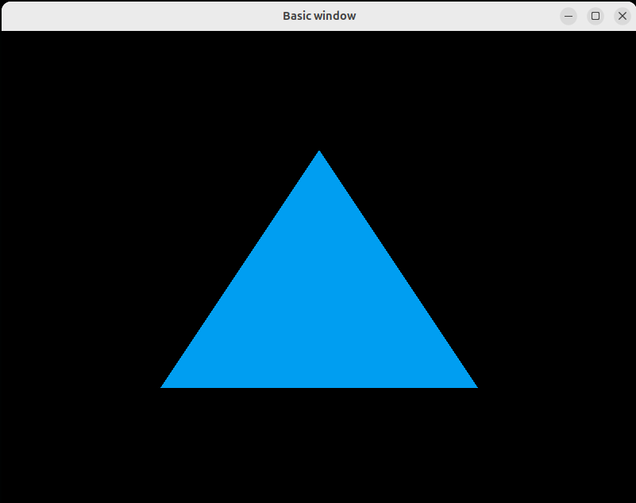
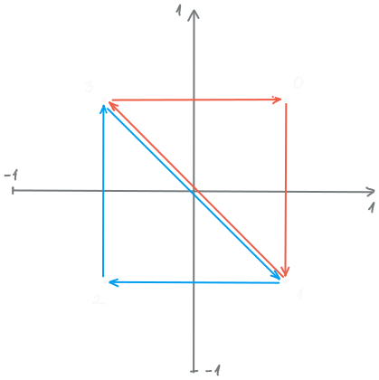

00_INTRODUCTION
OpenGL is a cross-language, cross-platform API for rendering in 2D and 3D. In this article series I want to show how to write a C++ program that renders whtever we want by using OpenGL, starting from creating a simple window and receiving inputs.
01_ABSTRACT
Continuing from Part 1, now we will learn how things are rendered. We will cover how to get things drawn on the screen, what the rendering pipeline is, and what shaders are.
02_GRAPHICS_PIPELINE_&_SHADERS
Rendering is a specific sequence of procedures that transforms a 3D object or scene into a 2D image that can be displayed on a screen. The graphics pipeline can differ from one graphics API to another, but it generally follows the same idea.

Shaders are small programmable operations that can be applied on data moving through the rendering pipeline. We can create our own vertex, geometry, and fragment shaders for rendering.
Vertex Shaders
The vertex shader is responsible for the 3D points that define the object we want to render. It runs once for each vertex and does the following things:
- Transforms (scaling, rotations, translations) the 3D vertices using linear transformations.
- Manipulates vertex properties which often are things like color and texture coordinates.
- Translates the 3D vertex positions to their places on the screen.
- Conway's Game of LIfe - cell's dead or alive state.
- Physics Simulations - particle's speed, mass, other property.
Geometry Shaders
Geometry shaders are executed after vertex shaders and operate on primitives rather than vertices. If the primitives are triangles, the shaders gets a triangle as an input. The primitive can be made into 0 or more primitives, which are rasterized and passed to the fragment shader.
Fragment Shaders
Fragment shaders operate on individual pixels. This shader computes the final color value of a pixel, and with extra inputs we can do fancy things like adding lighting and shadows.
Compute Shader
You can't see Compute Shaders in the graphics pipeline diagram, but they exist. They are useful for GPU computing, but I won't go into detail about them in this article because I want to have a separate article focusing entirely on GPU computing using OpenGL or CUDA.
03_RENDERING
After briefly explaining the graphics pipeline and shader types, it is time to finally draw something on our brand new window. The idea is the following:
- Create the vertex data (it should contain at least x,y,z coordinates for each vertex, and later we can add more stuff).
- Reserve memory on the GPU where we will store the vertex data. This memory is managed by vertex buffer objects (VBOs).
- Send the vertex data to be rendered and specify how we want the GPU to manage the data.
Passing Vertex Data
Let's see how we can pass vertex data to the GPU.
// define the x,y,z positions of 3 vertices
float vertices[] = {
-0.5f, -0.5f, 0.0f, // bottom left
0.5f, -0.5f, 0.0f, // bottom right
0.0f, 0.5f, 0.0f // top
};
unsigned int VBO; // place to store the unique buffer object ID
glGenBuffers(1, &VBO); // generate 1 buffer obj. and store its ID in VBO
// bind buffer with ID saying it will contain vertex array data
glBindBuffer(GL_ARRAY_BUFFER, VBO);
// copy vertices data into the currently bound buffer
// specify things like size and how often we will change the data
glBufferData(GL_ARRAY_BUFFER, sizeof(vertices), vertices, GL_STATIC_DRAW);
glBindBuffer(GL_ARRAY_BUFFER, 0); // unbind the buffer just in case
Depending on how often we change the vertex data, we can specify the usage pattern of the data:
GL_STREAM_DRAW: the data is updated every frame.GL_STATIC_DRAW: the data is set once and the GPU reuses it.GL_DYNAMIC_DRAW: the data changes frequently.
Writing Shaders
The vertex data is passed succesfully to the GPU, and now we have to tell the GPU what to do with that data. We do that with a vertex shader.
#version 450 core // 450 core for OpenGL version 4.5 & Core Profile
// the 1st feature in the input is the 3D vector aPos
layout (location = 0) in vec3 aPos;
void main() {
// set the vertex shader output
gl_Position = vec4(aPos.x, aPos.y, aPos.z, 1.0);
}
We'll skip the geometry shader for now and move to the fragment shader.
#version 450 core
out vec4 FragColor; // no input, so the color is static
void main() {
// determine the pixel color
FragColor = vec4(0.0f, 0.6196f, 0.945f, 1.0f);
}
Loading the Shaders
We should have the shader source code as character arrays, and we point to that when we specify the shader source.
// create & load the vertex shader
unsigned int vertexShader = glCreateShader(GL_VERTEX_SHADER); // specify shader type
// specify the shader ID, num. of shader source codes,
// pointer to the shader source code, and NULL
glShaderSource(vertexShader, 1, &vertexShaderSource, NULL);
glCompileShader(vertexShader);
// create & load the fragment shader
unsigned int fragmentShader = glCreateShader(GL_FRAGMENT_SHADER);
glShaderSource(fragmentShader, 1, &fragmentShaderSource, NULL);
glCompileShader(fragmentShader);
// create a program object, attach the shaders, and link them
unsigned int shaderProgram = glCreateProgram();
glAttachShader(shaderProgram, vertexShader);
glAttachShader(shaderProgram, fragmentShader);
glLinkProgram(shaderProgram);
Finally, to actually use the shader program, we use glUseProgram(shaderProgram).
Once we link the shaders, we don't need the vertex nd fragment shaders, so we can
delete them with glDeleteShader(vertexShader) and glDeleteShader(fragmentShader).
Use glGetShaderiv(vertexShader, GL_COMPILE_STATUS, &success)
to load the compilation status to success. We can get other
information using:
GL_SHADER_TYPEGL_DELETE_STATUSGL_INFO_LOG_LENGTHGL_SHADER_SOURCE_LENGTH
Vertex Data Interpretation
We got the vertex data to the GPU memory and told the GPU what computations to do, but we have to mention how to interpret the data. That is done with Vertex Array Objects (VAOs).
The creation of a VAO is similar to that of a VBO.
// generate the VAO
unsigned int VAO;
glGenVertexArrays(1, &VAO);
glBindVertexArray(VAO); // bind the VAO
// transfer the vertex data to the GPU
glVertexAttribPointer(
0, // 1st vertex feature (layout = 0 in the vertex shader)
3, // number of components per feature
GL_FLOAT, // data type
GL_FALSE, // is the data normalized
3 * sizeof(float), // stride length
(void*)0 // offset of the 1st value in the vertex features
);
glEnableVertexAttribArray(0);
Drawing
Finally, we can draw a triangle.
// use the shader
glUseProgram(shaderProgram);
// ...
// in the loop
glBindVertexArray(VAO);
glDrawArrays(
GL_TRIANGLES, // what kind of primitive to render
0, // from which vertex to start
3 // number of vertices to render
);
We can select from the following primitives.
GL_POINTSGL_LINE_STRIPGL_LINE_LOOPGL_LINESGL_LINE_STRIP_ADJACENCYGL_LINES_ADJACENCYGL_TRIANGLE_STRIPGL_TRIANGLE_FANGL_TRIANGLESGL_TRIANGLE_STRIP_ADJACENCYGL_TRIANGLES_ADJACENCYGL_PATCHES

Element Buffer Objects
If we want to render a rectangle, we need to draw 2 triangles. For 2 triangles we need 6 vertices in total and 2 of them are repeated. This takes up space in the GPU's memory, but we can avoid storing the same vertex multiple times by using an element buffer object (EBO). BY using it, we specify the vertices, and specify the triangles by selecting indices of the vertices we want for the triangle. Here is an example:
float vertices[] = {
0.5f, 0.5f, 0.0f, // top right
0.5f, -0.5f, 0.0f, // bottom right
-0.5f, -0.5f, 0.0f, // bottom left
-0.5f, 0.5f, 0.0f // top left
};
unsigned int indices[] = {
0, 1, 3, // first triangle
1, 2, 3 // second triangle
};

We need to create an EBO, bind it, and send the data to the GPU.
// generate the EBO ID
unsigned int EBO;
glGenBuffers(1, &EBO);
// send the data to the GPU
glBindBuffer(GL_ELEMENT_ARRAY_BUFFER, EBO);
glBufferData(GL_ELEMENT_ARRAY_BUFFER, sizeof(indices), indices, GL_STATIC_DRAW);
// ...
// in the render loop
glBindBuffer(GL_ELEMENT_ARRAY_BUFFER, EBO);
glDrawElements(
GL_TRIANGLES, // draw full triangles
6, // number of vertices to draw
GL_UNSIGNED_INT, // data type of the values in indices
0 // from which vertex to start
);